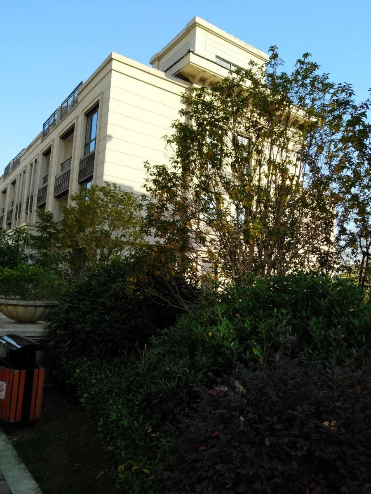
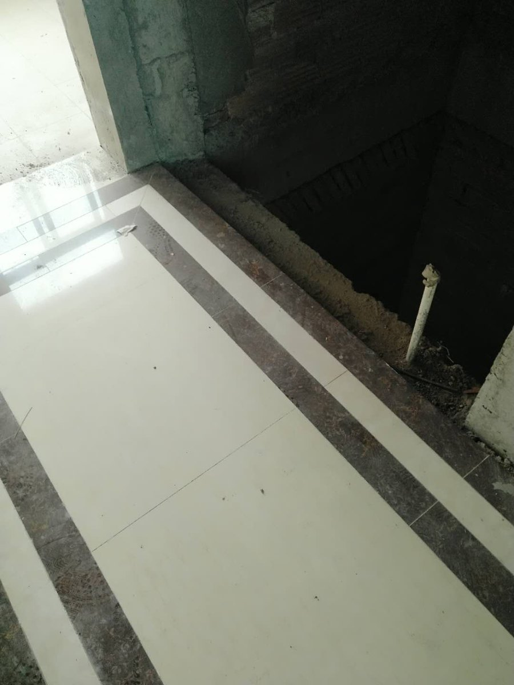
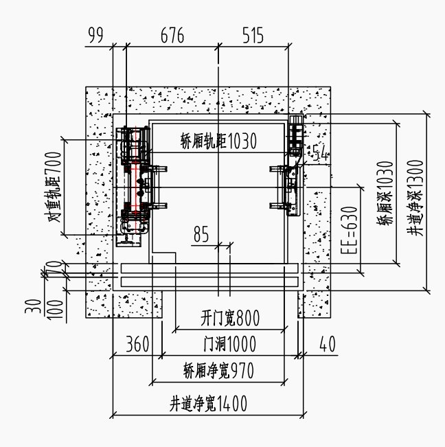

项目地区：合肥·滨湖新区
项目名称：合肥·滨湖别墅项目
房屋类型：别墅 / 小井道方案
客户需求：客户希望在有限井道空间内安装家用电梯。
现场问题：井道尺寸紧张，需要先确认净尺寸、底坑、顶层高度和开门方式。
俞工方案：俞工先做现场测量，再按房屋结构匹配可行方案。
判断重点：净尺寸、门洞、底坑与顶层高度必须同时复核，具体参数以现场复尺为准。
每一个案例，都是从现场条件开始判断。

项目地区：合肥·滨湖新区
房屋类型：别墅 / 小井道方案
客户需求：客户希望在有限井道空间内安装家用电梯。
现场问题：井道尺寸紧张，需要先确认净尺寸、底坑、顶层高度和开门方式。
俞工方案：俞工先做现场测量，再按房屋结构匹配可行方案。
判断重点：净尺寸、门洞、底坑与顶层高度必须同时复核，具体参数以现场复尺为准。

项目地区：六安及周边
房屋类型：自建房 / 居家改善
客户需求：客户关注老人上下楼和长期使用便利性。
现场问题：自建房结构差异较大，需要结合井道、楼层和施工条件判断。
俞工方案：先判断房屋条件，再给出适合家庭使用的方案建议。
判断重点：先确定安装位置和长期使用需求，再匹配井道、开门与施工方案。

项目地区：安庆及周边
房屋类型：楼梯中间 / 加装方案
客户需求：客户希望尽量利用楼梯中间空间，不大改房屋结构。
现场问题：需要同时看洞口尺寸、通行宽度、开门方向和结构固定条件。
俞工方案：俞工按楼梯空间和使用动线做综合判断。
判断重点：兼顾电梯安装条件与楼梯日常通行宽度。

项目地区：合肥及周边
房屋类型：小空间 / 井道判断
客户需求：客户已预留较小空间，希望判断能否安装家用电梯。
现场问题：单看宽深尺寸不够，还要看门洞、底坑、顶层和设备形式。
俞工方案：先区分土建尺寸和净尺寸，再判断是否需要非标电梯方案。
判断重点：区分土建尺寸与完成面净尺寸，避免装修后空间不足。

项目地区：固始·华侨名苑
房屋类型：小别墅 / U型楼梯中间空间
客户需求：在空间较小的别墅中安装家用别墅电梯。
现场问题：楼梯中间预留空间有限，需要判断井道、底坑、焊接结构和施工方式。
俞工方案：按现场条件做钢结构井道和焊接图纸，再推进设备和安装。
判断重点：这类历史案例只能作原文参考，新项目仍需以现场复尺和当前技术资料为准。